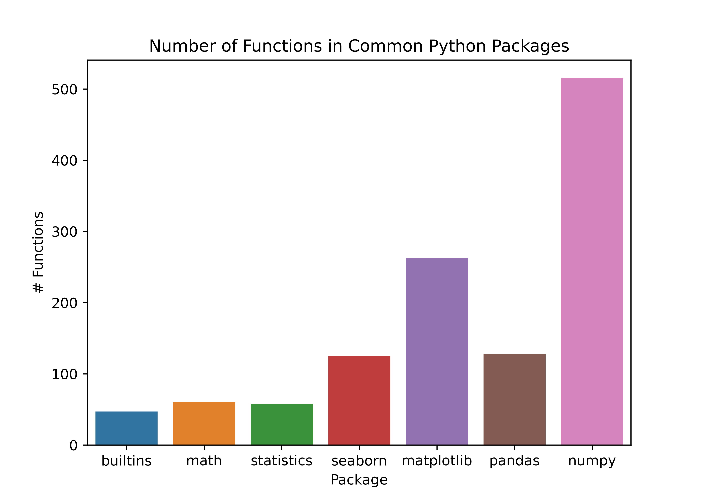

8 Using Functions and Libraries
In addition to variables, functions are extremely important in programming. Functions allow you to repeat a series of steps using different information and get the result. In a way, a function is to a variable as a verb is to a noun - functions are a concise way of performing an action.
8.1 Objectives
- Understand how functions are used in R and python
- Understand how to install packages in R and python
- Understand how to load packages in R and python
- Use pipes to restructure code so that it is more readable
8.2 Mathematical Operators
Let’s first start with a special class of functions that you’re probably familiar with from your math classes - mathematical operators.
Here are a few of the most important ones:
| Operation | R symbol | Python symbol |
|---|---|---|
| Addition | + |
+ |
| Subtraction | - |
- |
| Multiplication | * |
* |
| Division | / |
/ |
| Integer Division | %/% |
// |
| Modular Division | %% |
% |
| Exponentiation | ^ |
** |
These operands are all for scalar operations (operations on a single number) - vectorized versions, such as matrix multiplication, are somewhat more complicated (and different between R and python).
Integer division is the whole number answer to A/B, and modular division is the fractional remainder when A/B.
Let’s demonstrate with the problem 14/3, which evaluates to 4.6666667 when division is used, but has integer part 4 and remainder 2.
14 %/% 3 in R would be 4, and 14 %% 3 in R would be 2.
14 // 3
## 4
14 % 3
## 28.3 Order of Operations
Both R and Python operate under the same mathematical rules of precedence that you learned in school. You may have learned the acronym PEMDAS, which stands for Parentheses, Exponents, Multiplication/Division, and Addition/Subtraction. That is, when examining a set of mathematical operations, we evaluate parentheses first, then exponents, and then we do multiplication/division, and finally, we add and subtract.
(1+1)^(5-2)
## [1] 8
1 + 2^3 * 4
## [1] 33
3*1^3
## [1] 3(1+1)**(5-2)
## 8
1 + 2**3*4
## 33
3*1**3
## 38.4 Simple String Operations
Python has some additional operators that work on strings. In R, you will have to use functions to perform these operations, as R does not have string operators.
8.5 Using Functions
Functions are sets of instructions that take arguments and return values. Strictly speaking, mathematical operators (like those above) are a special type of functions – but we aren’t going to get into that now.
We’re also not going to talk about how to create our own functions just yet. Instead, I’m going to show you how to use functions.
It may be helpful at this point to print out the R reference card1 and the Python reference card2 . These cheat sheets contain useful functions for a variety of tasks in each language .
Methods are a special type of function that operate on a specific variable type. In Python, methods are applied using the syntax variable.method_name(). So, you can get the length of a string variable my_string using my_string.length().
R has methods too, but they are invoked differently. In R, you would get the length of a string variable using length(my_string).
Right now, it is not really necessary to know too much more about functions than this: you can invoke a function by passing in arguments, and the function will do a task and return the value.
Try out some of the functions mentioned on the R and Python cheatsheets.
Can you figure out how to define a list or vector of numbers? If so, can you use a function to calculate the maximum value?
Can you find the R functions that will allow you to repeat a string variable multiple times or concatenate two strings? Can you do this task in Python?
# Define a vector of numbers
x <- c(1, 2, 3, 4, 5)
# Calculate the maximum
max(x)
## [1] 5
# function to repeat a variable multiple times
rep("test", 3)
## [1] "test" "test" "test"
# Concatenate strings, using "ing... " as the separator
paste(rep("test", 3), collapse = "ing... ")
## [1] "testing... testing... test"# Define a list of numbers
x = [1, 2, 3, 4, 5]
# Calculate the maximum
max(x)
# Repeat a string multiple times
## 5
x = ("test", )*3 # String multiplication
# have to use a tuple () to get separate items
# Then use 'yyy'.join(x) to paste items of x together with yyy as separators
'ing... '.join(x)
## 'testing... testing... test'8.6 Overpowerd Calculators
Now that you’re familiar with how to use functions, if not how to define them, you are capable of using R or python as a very fancy calculator. Obviously, both languages can do many more interesting things, which we’ll get to, but let’s see if we can make R and Python do some very basic stuff that hopefully isn’t too foreign to you.

Consider this triangle. I’ve measured the sides in an image editor and determined that \(a = 212\) pixels, \(b = 345\) pixels, and \(c = 406\) pixels. I suspect, however, that my measurements aren’t quite right - for one thing, I tried to measure in the center of the line, but it wasn’t easy on the diagonal.
Let’s assume that my measurements for \(a\) and \(b\) are accurate and calculate how far off my estimate was for side \(c\).
# Define variables for the 3 sides of the triangle
a <- 212
b <- 345
c_meas <- 406
c_actual <- sqrt(a^2 + b^2)
# Calculate difference between measured and actual
# relative to actual
# and make it a percentage
pct_error <- (c_meas - c_actual)/c_actual * 100
pct_error
## [1] 0.2640307# To get the sqrt function, we have to import the math package
import math
# Define variables for the 3 sides of the triangle
a = 212
b = 345
c_meas = 406
c_actual = math.sqrt(a**2 + b**2)
# Calculate difference between measured and actual
# relative to actual
# and make it a percentage
pct_error = (c_meas - c_actual)/c_actual * 100
pct_error
## 0.264030681414134Interesting, I wasn’t as inaccurate as I thought!
Of course, if you remember trigonometry, we don’t have to work with right triangles. Let’s see if we can use trigonometric functions to do the same task with an oblique triangle.
Just in case you’ve forgotten your Trig, the Law of Cosines says that \[c^2 = a^2 + b^2 - 2 a b \cos(C),\] where \(C\) is the angle between sides \(a\) and \(b\).

I measure side \(a = 291\) pixels, side \(b = 414\) pixels, and the angle between \(a\) and \(b\) to be \(67.6^\circ\). What will I likely get for the length of side \(c\) in pixels?
Remember to check whether R and python compute trig functions using radians or degrees! As a reminder, \(\pi\) radians = \(180^\circ\).
I measured the length of side \(c\) as 407 pixels.
# To get the sqrt and cos functions, we have to import the math package
import math
# Define variables for the 3 sides of the triangle
a = 291
b = 414
c_angle = 67.6
c_actual = math.sqrt(a**2 + b**2 - 2*a*b*math.cos(c_angle/180*math.pi))
c_actual
## 405.28860699402117I measured the length of side \(c\) as 407 pixels.
Congratulations, if you used a TI-83 in high school to do this sort of stuff, you’re now just about as proficient with R and python as you were with that!
8.7 Libraries
Both R and python have a very robust system for extending the language with user-written packages. These packages will give you access to features that aren’t present in the base language, including new statistical methods, all sorts of plotting and visualization libraries, ways of interacting with data that are way more convenient than the default base language methods, and more.
There are tons of considerations to think about when using a new library, like how well it’s maintained, how many dependencies it has, and whether the developers of the package prioritize backwards-compatibility. For the moment, we’re going to ignore most of those considerations in favor of learning how to install packages and how to use functions from packages in our code.
8.7.1 Package management
Before we talk about how to install packages, though, we need to step back and think a little bit about the pros and cons of different ways of managing packages, if only because the most common R and python setups use very different approaches.
Imagine that you’re an accomplished programmer, and you are juggling multiple different projects. Each project uses some of the same packages, but some different packages as well. You open up a project that you haven’t run in a year, and you find out that one of the packages you’ve updated more recently breaks a bunch of code you wrote a year ago, because the functions in the package have been renamed.
What could prevent this from happening?
One way to solve this problem is to store the packages used in each project inside the project directory, in what we might call a project environment. This will keep each project isolated from the others, so that if you update a package in one project, it doesn’t affect any other project.
However, this approach results in a lot of duplication: for one thing, you have copies of each package hanging around in every folder on your computer. That’s not storage efficient, but it does keep your code from breaking as frequently.
Typically, Python programmers prefer the first approach (project-specific virtual environments), and R programmers default to the second approach (installing packages at the user or system level).
This is one of the things that can make starting to learn python so difficult - it can be hard to make sure you’re using the right environment. It doesn’t help that there are several different environment management systems in python - virtualenv, pipenv, and conda are the main options.
Many of the instructions here modified from [1].
conda and virtualenv are both virtual environment management systems.
Conda is sometimes preferred for scientific computing because it handles the complex dependencies that arise from large packages like numpy and scipi and pandas a bit better than pip does alone.
This guide assumes you have conda set up already. By default, Chapter 2 just installs python at the system level. If you want to use anaconda or miniconda you should go read the documentation for those installers and follow those steps first. Alternately, you can install and load the reticulate R package and then run install_miniconda() - this will install miniconda somewhere that RStudio can find it, but it may make using miniconda outside of RStudio difficult.
You can absolutely install all python packages at the user/system level using pip. This has the previously mentioned disadvantages, but has the major advantage of being very simple.
I highly recommend that you pick one of these options and use that consistently, rather than trying the advantages and disadvantages of each option in different projects. Here is a webcomic to serve as a cautionary tale if you do not heed this warning.

In your system terminal, navigate to your project directory. Items within < > are intended to be replaced with values specific to your situation.
cd <project-directory>
pip3 install virtualenv # install virtual environments
# Create a virtual environment
virtualenv <env-name>
# Activate your virtual environment
source <env-name>/bin/activate
# Install packages
pip install <pkg1> <pkg2> <pkg3>Then, in RStudio, you will want to run the following lines in the R terminal:
install.packages("reticulate")
library(reticulate)
# tell R/Rstudio what python to use
Sys.setenv(RETICULATE_PYTHON = "<env-name>/bin/python") You can make this step permanent by modifying the .Rprofile file in your project directory and adding the Sys.setenv() line to that file.
Restart your R session before you start trying to work in python.
Open your RStudio project. In your R terminal, run the following lines:
install.packages("reticulate")
library(reticulate)
virtualenv_create(envname = "<env-name>",
packages = c("<pkg1>", "<pkg2>", "<pkg3>"))
# tell R/Rstudio what python to use
Sys.setenv(RETICULATE_PYTHON = "<env-name>/bin/python")
# Activate your virtual environment
use_virtualenv("<env-name>")
# Check that the correct python instance is being used
py_config()
# Check that packages are installed in your virtual env
grep(pattern = "<pkg1>|<pkg2>|<pkg3>",
x = as.character(py_list_packages(envname = "<env-name>")$package))Restart your R session before you start trying to work in python.
These steps constructed from [2].
cd <project-directory>
# Create conda environment and install specific python version and packages
conda create --prefix ./<env-name> python=<python-version> <pkg1> <pkg2> <pkg3>
# Activate your virtual environment
conda activate ./<env-name>Then, in RStudio, you will want to run the following lines in the R terminal:
install.packages("reticulate")
library(reticulate)
# tell R/Rstudio what python to use
Sys.setenv(RETICULATE_PYTHON = "./<env-name>/bin/python") You can make this step permanent by modifying the .Rprofile file in your project directory and adding the Sys.setenv() line to that file.
Restart your R session before you start trying to work in python.
Open your RStudio project. In your R terminal, run the following lines:
install.packages("reticulate")
library(reticulate)
conda_create(envname = "<env-name>",
packages = c("<pkg1>", "<pkg2>", "<pkg3>"))
# tell R/Rstudio what python to use
Sys.setenv(RETICULATE_PYTHON = "<env-name>/bin/python")
# Activate your virtual environment
use_condaenv("<env-name>")
# Check that the correct python instance is being used
py_config()
# Check that packages are installed in your virtual env
grep(pattern = "<pkg1>|<pkg2>|<pkg3>",
x = as.character(py_list_packages(envname = "<env-name>")$package))Restart your R session before you start trying to work in python.
8.7.2 Package repositories
Both R and Python have package systems, though generally, R is a bit more straightforward to deal with than python, because python has more package systems and I don’t fully understand them all, where all R packages seem to go through the same basic installation process and are just hosted in different places.
| Formally Published | Informally Published/Beta | |
|---|---|---|
| R | CRAN, Bioconductor | github and other version control. See the remotes package documentation for all of the options. |
| Python | PyPi | github and other version control systems |
8.7.3 Installing packages
Once you’ve configured your package management in R and python, installation is (usually) relatively simple.
8.7.4 Loading Packages
Once you have the package installed, you need to load the package into memory so that you can use the functions and data contained within. Again, R and python differ slightly in how programmers conventionally handle this process.
- R: Load all of the package’s functions, overwriting already loaded functions if necessary
- Python: Load all of the package’s functions, contained within an object that is either the package name or a shortened alias.
Now, both R and python can load packages in either way, so this isn’t an either/or thing - it’s about knowing what the conventions of the language are, and then deciding whether or not it is appropriate to follow those conventions in your project.
To demonstrate this approach, let’s create a simple plot with a plotting library (ggplot2 in R, plotnine in Python).
All of the other packages in this plot are present by default in any new R environment.
library(ggplot2)
# This code lists all the functions available to be called
pkgs <- search()
pkgs <- pkgs[grep("package:",pkgs)]
# get all the functions in each package that is loaded
all_fns <- lapply(pkgs, function(x) as.character(lsf.str(x)))
# create a data frame
pkg_fns <- data.frame(pkg = rep(pkgs, sapply(all_fns, length)),
fn = unlist(all_fns))
pkg_fns$pkg <- gsub("package:", "", pkg_fns$pkg)
ggplot(pkg_fns, aes(x = pkg, y = after_stat(count), fill = pkg)) +
geom_bar() + theme(legend.position = "none") +
ylab("# Functions") + xlab("Package")
from plotnine import *
# I have no clue how to get all callable objects in python
# classes and methods for those classes make this a lot harder... ugh
pkg_fns = r.pkg_fns # This is just the same data from R
(
ggplot(pkg_fns, aes(x = "pkg", fill = "pkg")) +
geom_bar(aes(y = after_stat("count"))) +
theme(legend_position = "none") +
ylab("# Functions") + xlab("Package")
)
## <ggplot: (8749313477599)>
# This code lists all the functions available to be called
pkgs <- search()
pkgs <- pkgs[grep("package:",pkgs)]
# get all the functions in each package that is loaded
all_fns <- lapply(pkgs, function(x) as.character(lsf.str(x)))
# create a data frame
pkg_fns <- data.frame(pkg = rep(pkgs, sapply(all_fns, length)),
fn = unlist(all_fns))
pkg_fns$pkg <- gsub("package:", "", pkg_fns$pkg)
ggplot2::ggplot(pkg_fns, ggplot2::aes(x = pkg, fill = pkg)) +
ggplot2::geom_bar(y = ggplot2::after_stat(count)) +
ggplot2::theme(legend.position = "none") +
ggplot2::xlab("Package") + ggplot2::ylab("# Functions")
## Error in ggplot2::after_stat(count): object 'count' not foundimport plotnine as p9
pkg_fns = r.pkg_fns
(
p9.ggplot(pkg_fns, p9.aes(x = "pkg", fill = "pkg")) +
p9.geom_bar(y = p9.after_stat("count")) +
p9.theme(legend_position = "none") +
p9.xlab("Package") + p9.ylab("# Functions")
)
## <ggplot: (8749331920530)>
In python, you can use import package as nickname, or you can just use import package and reference the package name directly. There are some packages which have typical aliases, and it’s best to use those so that you can look things up and not get too confused.
| Package | Common Alias | Explanation |
|---|---|---|
| pandas | pd | shorter |
| numpy | np | shorter |
| seaborn | sns | This is a reference to Samuel Norman Seaborn, played by Rob Lowe, in the TV show The West Wing |
| plotnine | p9 | |
| BeautifulSoup (bs4) | bs | BeautifulSoup is a reference to Alice in Wonderland. The package name in PyPi is actually bs4. |
8.8 Pipes
Pipes are useful items for moving things from one place to another. In programming, and in particular, in data programming, pipes are operators that let us move data around. In R, we have two primary pipes that are similar (you may see both used if you google for code online). Any R version after 4.1 has a built-in pipe, |>; the tidyverse libraries use a pipe from the magrittr package, %>%.
For right now, it’s ok to think of the two pipes as essentially the same (but you can read about the differences [3]).
Fundamentally, a pipe allows you to take a function b() and apply it to x, like b(x), but write it as x |> b() or x %>% b(). This is particularly useful in cases where there are multiple sequential analysis steps, because where in regular notation you have to read the functions from the inside out to understand the sequential steps, with pipes, you have a clear step-by-step list of the order of operations.
In Python, there is a pipe function in the Pandas library that works using .pipe(function) notation [4]. From what I’ve seen reading code online, however, pipes are less commonly used in Python code than they are in R code. That’s ok - languages have different conventions, and it is usually best to adopt the convention of the language you’re working in so that your code can be read, run, and maintained by others more easily.
Generate 100 draws from a standard normal distribution and calculate the mean.
In R, simulate from a normal distribution with rnorm. In python, use np.random.normal - you’ll have to import numpy as np first.
Use 3 approaches: 1. Store the data in a variable, then calculate the mean of the variable 2. Calculate the mean of the data by nesting the two functions (e.g. mean(generate_normal(100)) in pseudocode) 3. Calculate the mean of the data using the pipe (e.g. generate_normal(100) |> mean())
Consider: What are the advantages and disadvantages of each approach? Would your answer change if there were more steps/functions required to get to the right answer?
In python, task 3 isn’t really possible, because of the way Python function chaining works, but task 2 is basically the equivalent.
import numpy as np
import pandas as pd
nums = pd.Series(np.random.normal(size = 100))
nums.mean()
## 0.15955073405762848
np.random.normal(size=100).mean()
## 0.2244761864608238The conclusion here is that it’s far easier to not use the pipe in python because the .function notation that python uses mimics the step-by-step approach of pipes in R even without using the actual pipe function. When you use data frames instead of Series, you might start using the pipe, but only in some circumstances - with user-defined functions, instead of methods. Methods are functions that are attached to a data type (technically, a class) and only work if they are defined for that class - for instance, .mean() is defined for both Pandas series and numpy arrays.